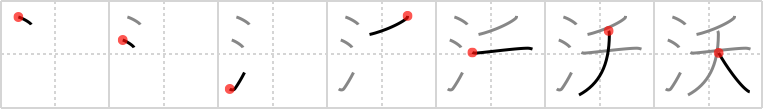

沃
← →
irrigate

Reading:
On-Yomi: ヨウ、ヨク、オク — Kun-Yomi: そそ.ぐ
Heisig story:
Suffering from a drought, the farmers call on a witch who conjures up water to irrigate their crops.
Koohii stories:
1) [astridtops] 16-5-2007(62): You use water to irrigate your saplings.
2) [mantixen] 12-10-2008(22): A fairy needs a lot of water to irrigate those beating wings, so you have make sure they drink a lot to be well irrigated (see bewitched (#2078 妖).
3) [lernsky] 10-1-2013(14): Water from the heavens is nature's way of irrigating.
4) [nest0r] 7-6-2008(5): Irrigation is the method used to water crops instead of relying on the gods in the heavens to send them drops as if they were dogs waiting for a sapling to be tossed for them to catch and retrieve.
5) [saizen] 13-11-2008(3): Water being used to irrigate the sapplings as it is a drought.